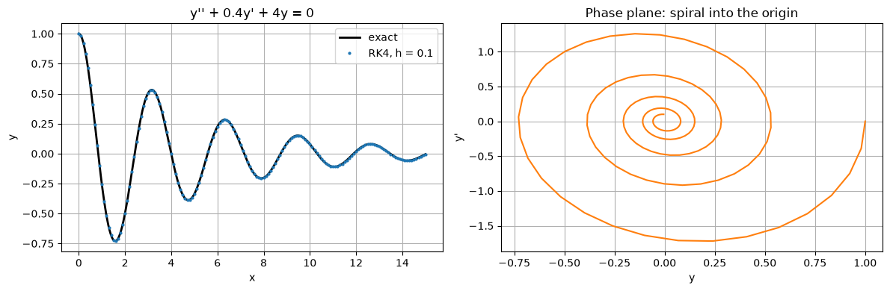
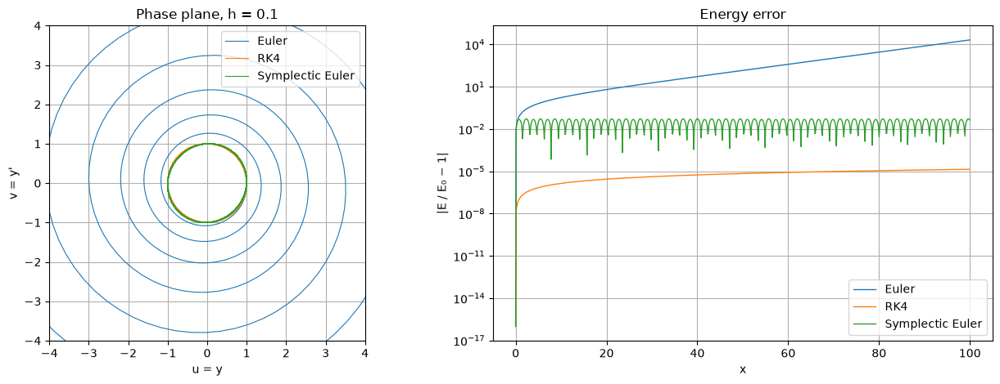
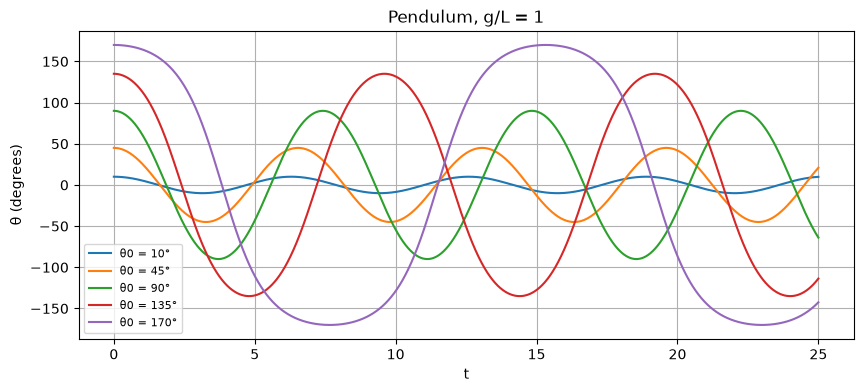
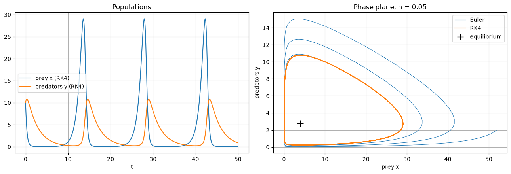

Code
import numpy as np
import matplotlib.pyplot as plt
plt.rcParams["figure.figsize"] = (7, 4.5)
plt.rcParams["axes.grid"] = True
np.set_printoptions(precision=6, suppress=True)Miraj Samarakkody
October 14, 2026
Most models involve more than one unknown: positions and velocities, predators and prey, several chemical concentrations. This section shows that every method in the chapter applies unchanged to systems, how higher-order equations are rewritten as systems, and what can go wrong over long simulations of oscillating systems.
A system of \(m\) first-order equations
\[ \begin{aligned} y_1' &= f_1(x, y_1, \dots, y_m)\\ &\ \ \vdots\\ y_m' &= f_m(x, y_1, \dots, y_m) \end{aligned} \]
is written in vector form as
\[\mathbf{y}' = \mathbf{f}(x, \mathbf{y}), \qquad \mathbf{y}(x_0) = \mathbf{y}_0, \qquad \mathbf{y} \in \mathbb{R}^m.\]
Every method carries over word for word: the slopes \(k_i\) simply become vectors. For example, Euler is \(\mathbf{y}_{n+1} = \mathbf{y}_n + h\,\mathbf{f}(x_n, \mathbf{y}_n)\), and RK4 uses four vector stages. The theory carries over too, with \(|\cdot|\) replaced by a vector norm and \(\partial f/\partial y\) replaced by the Jacobian matrix \(J = (\partial f_i/\partial y_j)\).
With NumPy the code hardly changes: store the solution as an array of shape \((n+1, m)\). The functions below also work for scalar equations.
def euler(f, x0, y0, h, n):
y0 = np.asarray(y0, dtype=float)
x, y = x0 + h * np.arange(n + 1), np.zeros((n + 1,) + y0.shape)
y[0] = y0
for i in range(n):
y[i + 1] = y[i] + h * f(x[i], y[i])
return x, y
def rk4(f, x0, y0, h, n):
y0 = np.asarray(y0, dtype=float)
x, y = x0 + h * np.arange(n + 1), np.zeros((n + 1,) + y0.shape)
y[0] = y0
for i in range(n):
k1 = f(x[i], y[i])
k2 = f(x[i] + h / 2, y[i] + h / 2 * k1)
k3 = f(x[i] + h / 2, y[i] + h / 2 * k2)
k4 = f(x[i] + h, y[i] + h * k3)
y[i + 1] = y[i] + h / 6 * (k1 + 2 * k2 + 2 * k3 + k4)
return x, yAn equation of order \(m\),
\[y^{(m)} = g\big(x, y, y', \dots, y^{(m-1)}\big),\]
becomes a first-order system by introducing the unknowns \(u_1 = y\), \(u_2 = y'\), …, \(u_m = y^{(m-1)}\):
\[u_1' = u_2, \qquad u_2' = u_3, \qquad \dots, \qquad u_m' = g(x, u_1, u_2, \dots, u_m).\]
The initial conditions \(y(x_0), y'(x_0), \dots, y^{(m-1)}(x_0)\) become the initial vector \(\mathbf{u}_0\).
Example: a damped oscillator.
\[y'' + 0.4\,y' + 4y = 0, \qquad y(0) = 1, \quad y'(0) = 0.\]
With \(u_1 = y\) and \(u_2 = y'\):
\[u_1' = u_2, \qquad u_2' = -4u_1 - 0.4u_2, \qquad \mathbf{u}(0) = (1, 0).\]
The characteristic equation \(r^2 + 0.4r + 4 = 0\) gives \(r = -0.2 \pm i\omega_d\) with \(\omega_d = \sqrt{3.96}\), so the exact solution is
\[y = e^{-0.2x}\left(\cos\omega_d x + \frac{0.2}{\omega_d}\sin\omega_d x\right).\]
damped = lambda x, u: np.array([u[1], -4 * u[0] - 0.4 * u[1]])
wd = np.sqrt(3.96)
damped_exact = lambda x: np.exp(-0.2 * x) * (np.cos(wd * x) + 0.2 / wd * np.sin(wd * x))
x, u = rk4(damped, 0, [1, 0], 0.1, 150)
xf = np.linspace(0, 15, 600)
fig, axes = plt.subplots(1, 2, figsize=(12, 4))
axes[0].plot(xf, damped_exact(xf), "k", lw=2, label="exact")
axes[0].plot(x, u[:, 0], ".", ms=4, label="RK4, h = 0.1")
axes[0].set_xlabel("x"); axes[0].set_ylabel("y"); axes[0].set_title("y'' + 0.4y' + 4y = 0"); axes[0].legend()
axes[1].plot(u[:, 0], u[:, 1], "C1")
axes[1].set_xlabel("y"); axes[1].set_ylabel("y'"); axes[1].set_title("Phase plane: spiral into the origin")
plt.tight_layout()
print(f"max |error| in y over [0, 15]: {np.max(np.abs(u[:, 0] - damped_exact(x))):.2e}")max |error| in y over [0, 15]: 5.00e-05
The undamped oscillator \(y'' = -y\), as the system
\[u' = v, \qquad v' = -u,\]
has solutions that move round circles in the \((u, v)\) plane forever. The energy \(E = \tfrac12(u^2 + v^2)\) is conserved exactly. The eigenvalues of the system matrix are \(\pm i\), so this is the imaginary-axis case of Section 5.3.
\[v_{n+1} = v_n - h\,u_n, \qquad u_{n+1} = u_n + h\,v_{n+1}.\]
It is still only order 1 and costs the same as Euler, but it preserves areas in the phase plane (the update matrix has determinant 1). As a result its energy error stays bounded: it oscillates but never drifts, however long the simulation.
osc = lambda x, u: np.array([u[1], -u[0]])
def symplectic_euler(h, n, u0, v0):
u, v = np.zeros(n + 1), np.zeros(n + 1)
u[0], v[0] = u0, v0
for i in range(n):
v[i + 1] = v[i] - h * u[i]
u[i + 1] = u[i] + h * v[i + 1]
return u, v
h, n = 0.1, 1000 # x up to 100, about 16 periods
_, ue = euler(osc, 0, [1, 0], h, n)
_, ur = rk4(osc, 0, [1, 0], h, n)
us, vs = symplectic_euler(h, n, 1, 0)
results = {"Euler": (ue[:, 0], ue[:, 1]), "RK4": (ur[:, 0], ur[:, 1]), "Symplectic Euler": (us, vs)}
fig, axes = plt.subplots(1, 2, figsize=(13, 4.8))
t = h * np.arange(n + 1)
for name, (u, v) in results.items():
axes[0].plot(u, v, lw=0.8, label=name)
energy = 0.5 * (u**2 + v**2)
axes[1].semilogy(t, np.abs(energy / 0.5 - 1) + 1e-16, lw=1, label=name)
print(f"{name:17s}: relative energy error at x = 100: {energy[-1] / 0.5 - 1:+.2e}")
axes[0].set_xlim(-4, 4); axes[0].set_ylim(-4, 4); axes[0].set_aspect("equal")
axes[0].set_xlabel("u = y"); axes[0].set_ylabel("v = y'"); axes[0].set_title("Phase plane, h = 0.1"); axes[0].legend(loc="upper right")
axes[1].set_xlabel("x"); axes[1].set_ylabel("|E / E₀ − 1|"); axes[1].set_title("Energy error")
axes[1].legend()
plt.tight_layout()Euler : relative energy error at x = 100: +2.10e+04
RK4 : relative energy error at x = 100: -1.39e-05
Symplectic Euler : relative energy error at x = 100: +4.26e-02
For long simulations of conservative systems (planetary orbits, molecular dynamics, particle accelerators) the qualitative behaviour matters more than the local error, so geometric integrators are used: symplectic Euler, the Störmer–Verlet (leapfrog) method, and higher-order symplectic methods.
A pendulum of length \(L\) obeys
\[\theta'' = -\frac{g}{L}\sin\theta.\]
For small angles \(\sin\theta \approx \theta\), which gives simple harmonic motion with period \(T_0 = 2\pi\sqrt{L/g}\) independent of the amplitude. For large swings the period increases. The exact period for a release from rest at angle \(\theta_0\) is
\[T = 4\sqrt{\frac{L}{g}}\;K\!\left(\sin\frac{\theta_0}{2}\right),\]
where \(K(k)\) is the complete elliptic integral of the first kind. It can be computed very accurately with the arithmetic–geometric mean: \(K(k) = \dfrac{\pi}{2\,\operatorname{AGM}\big(1, \sqrt{1 - k^2}\big)}\).
We take \(g/L = 1\) (so \(T_0 = 2\pi\)), integrate with RK4, and measure the period from the time of the first zero crossing of \(\theta\), which is \(T/4\).
pend = lambda t, s: np.array([s[1], -np.sin(s[0])])
def agm(a, b):
while abs(a - b) > 1e-15:
a, b = (a + b) / 2, np.sqrt(a * b)
return a
K = lambda k: np.pi / (2 * agm(1.0, np.sqrt(1 - k**2)))
h, n = 0.01, 2500
print(f"{'θ0':>6} {'RK4 period':>12} {'exact period':>13} {'difference':>11} {'small-angle 2π':>15}")
fig, ax = plt.subplots(figsize=(10, 4))
for deg in [10, 45, 90, 135, 170]:
th0 = np.radians(deg)
t, s = rk4(pend, 0, [th0, 0], h, n)
i = np.argmax(s[:, 0] < 0) # first step with θ < 0
t_cross = t[i - 1] + h * s[i - 1, 0] / (s[i - 1, 0] - s[i, 0]) # linear interpolation
T_num, T_exact = 4 * t_cross, 4 * K(np.sin(th0 / 2))
print(f"{deg:5d}° {T_num:12.5f} {T_exact:13.5f} {T_num - T_exact:11.1e} {2 * np.pi:15.5f}")
ax.plot(t, np.degrees(s[:, 0]), label=f"θ0 = {deg}°")
ax.set_xlabel("t"); ax.set_ylabel("θ (degrees)"); ax.set_title("Pendulum, g/L = 1")
ax.legend(loc="lower left", fontsize=8); θ0 RK4 period exact period difference small-angle 2π
10° 6.29517 6.29517 3.8e-08 6.28319
45° 6.53435 6.53435 4.4e-08 6.28319
90° 7.41630 7.41630 3.0e-08 6.28319
135° 9.60038 9.60038 6.5e-09 6.28319
170° 15.32697 15.32697 6.3e-08 6.28319
The RK4 periods agree with the elliptic-integral formula to about 7–8 significant figures. (Linear interpolation is enough to locate the zero crossing this accurately because \(\theta'' = -\sin\theta \approx 0\) there, so \(\theta\) is almost exactly linear near the crossing.) At \(170^\circ\) the period is more than twice the small-angle value, and the motion is visibly not sinusoidal: the pendulum lingers near the top of its swing.
Let \(x\) be a prey population and \(y\) a predator population:
\[x' = \alpha x - \beta xy, \qquad y' = \delta xy - \gamma y.\]
Prey grow at rate \(\alpha\) and are eaten at a rate proportional to encounters \(xy\); predators grow by eating and die at rate \(\gamma\). The populations cycle around the equilibrium \((\gamma/\delta,\ \alpha/\beta)\), and the quantity
\[V(x, y) = \delta x - \gamma\ln x + \beta y - \alpha\ln y\]
is conserved (Exercise 4), so every exact orbit is a closed curve. A good method should keep \(V\) nearly constant.
We use \(\alpha = 1.1\), \(\beta = 0.4\), \(\gamma = 0.4\), \(\delta = 0.1\) and start from \(x = y = 10\).
al, be, ga, de = 1.1, 0.4, 0.4, 0.1
lv = lambda t, z: np.array([al * z[0] - be * z[0] * z[1], de * z[0] * z[1] - ga * z[1]])
V = lambda z: de * z[..., 0] - ga * np.log(z[..., 0]) + be * z[..., 1] - al * np.log(z[..., 1])
h, n = 0.05, 1000 # t up to 50
t, ze = euler(lv, 0, [10, 10], h, n)
_, zr = rk4(lv, 0, [10, 10], h, n)
fig, axes = plt.subplots(1, 2, figsize=(13, 4.5))
axes[0].plot(t, zr[:, 0], label="prey x (RK4)")
axes[0].plot(t, zr[:, 1], label="predators y (RK4)")
axes[0].set_xlabel("t"); axes[0].set_title("Populations"); axes[0].legend()
axes[1].plot(ze[:, 0], ze[:, 1], lw=0.8, label="Euler")
axes[1].plot(zr[:, 0], zr[:, 1], lw=1.5, label="RK4")
axes[1].plot(ga / de, al / be, "k+", ms=12, label="equilibrium")
axes[1].set_xlabel("prey x"); axes[1].set_ylabel("predators y"); axes[1].set_title("Phase plane, h = 0.05")
axes[1].legend()
plt.tight_layout()
for name, z in [("Euler", ze), ("RK4", zr)]:
print(f"{name:5s}: V changes by {V(z[-1]) - V(z[0]):+.2e} over t ∈ [0, 50]")Euler: V changes by +2.11e+00 over t ∈ [0, 50]
RK4 : V changes by -1.70e-05 over t ∈ [0, 50]
RK4’s orbit closes on itself and \(V\) is conserved to many digits. Euler’s orbit spirals outwards, so its populations swing more and more wildly: a qualitatively wrong prediction, caused only by the numerical method.
For a linear system \(\mathbf{y}' = A\mathbf{y}\), each eigenvalue \(\lambda_i\) of \(A\) behaves like its own test equation \(y' = \lambda_i y\). An explicit method is stable only if \(h\lambda_i\) lies in its stability region for every eigenvalue. For nonlinear systems the same applies to the eigenvalues of the Jacobian \(J\).
A system is stiff when its eigenvalues have very different sizes: the fast ones force a tiny step even after their components have decayed, while the solution is governed by the slow ones. The stiffness ratio \(\max|\operatorname{Re}\lambda_i| / \min|\operatorname{Re}\lambda_i|\) measures this.
A = np.array([[-500.5, 499.5],
[499.5, -500.5]])
lams = np.linalg.eigvals(A)
print(f"eigenvalues: {np.sort(lams)}")
print(f"stiffness ratio: {max(abs(lams)) / min(abs(lams)):.0f}")
print(f"RK4 stability limit: h < 2.785 / {max(abs(lams)):.0f} = {2.785 / max(abs(lams)):.5f}")
print(f"steps RK4 needs to reach x = 10 (the slow mode e^(−x) needs x ≈ 10 to decay): {10 / (2.785 / max(abs(lams))):,.0f}")eigenvalues: [-1000.+0.j -1.+0.j]
stiffness ratio: 1000
RK4 stability limit: h < 2.785 / 1000 = 0.00279
steps RK4 needs to reach x = 10 (the slow mode e^(−x) needs x ≈ 10 to decay): 3,591The slow component \(e^{-x}\) needs an interval of length about 10 to decay, but stability limits RK4 to \(h < 0.0028\): more than 3,500 steps, nearly all of them dictated by a component that vanished after \(x \approx 0.01\). An implicit method could take steps of \(0.1\) or more. Systems like this are typical in chemical kinetics and in heat-flow problems discretised in space.
Answers
3. T(179°) ≈ 24.5111 (exact 24.5111), which is 3.90 × the small-angle period